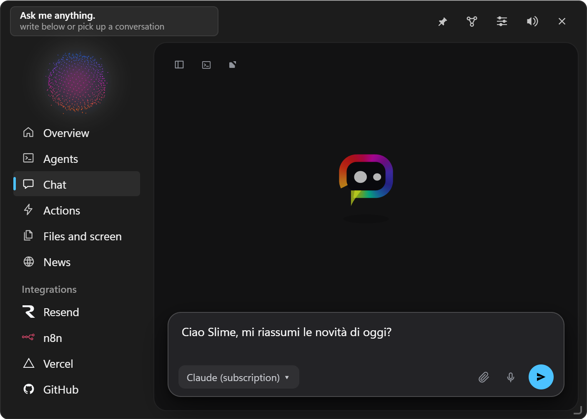
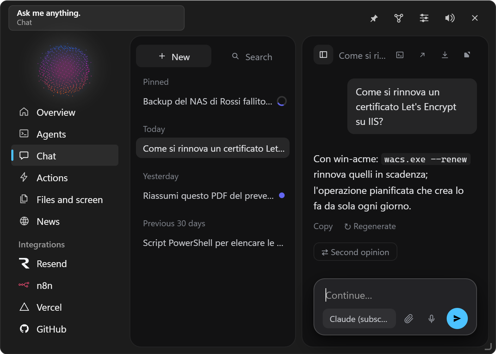

The chat
Writing, attaching, / and @ commands, assistants, dictation, history, second opinion.

#Writing
- An empty chat shows a faint, slow drawing until you write: Ezzy floating by default; in Settings → Appearance → Chat → Empty chat you can pick a turning island, a sea of dots, a starry sky, an aurora, a network of dots or nothing. It stops when the chat is not in view and stays still if Windows reduces animations. Under the drawing are your last three conversations: one click picks one up again.
- The field is multi-line: Enter sends, Shift+Enter adds a line. What you're writing survives a restart. ↑ in an empty field brings back the last question.
- Answers are in markdown: headings, lists, tables, code with Copy. While the engine works you see its reasoning and the tools it uses: the current one types itself at the bottom, with a caret. When the answer is done the steps fold into N steps: a click opens them.
- With Terminal mode, Project… under the field picks this chat's folder, so it reads the project's rules and git; the button also shows the branch. With Claude Code, a ring under the field says how full the conversation's context is: from 80% it turns orange, and it is time to start a new one. Default folder uses the one in Settings. Changing it opens a new conversation.
- ■ Stop interrupts the answer in progress (and the pending permission).
- You can keep writing while it answers: Enter puts the message in the queue, under the conversation as "waiting", and it goes by itself as soon as the answer ends, one after the other. On each queued message: Send now (stops the answer and sends it now), Edit (back in the field) and ✕. Ctrl+Enter sends it at once, skipping the queue. With an empty field the button stays ■ Stop.
- If you scroll up to read, incoming text doesn't pull you down: ↓ goes back to the bottom.
- Calculator: type
840 + 22%or15% of 840and the result appears right away, computed locally. Enter copies it, Ctrl+Enter asks the chat anyway.
#Under each message
- Copy.
- Edit (on your questions): the text goes back to the field and the conversation restarts from there.
- ↻ Regenerate (on the last answer).
- ⑂ Branch from here: a new conversation starting from that point; the previous one stays whole in the history.
- With Claude Code, Edit, Regenerate and Branch resume its session right from that point, as Claude Desktop does: Claude also remembers the files read so far.
- ⟲ Files (on your questions, in terminal mode): puts the files Claude Code changed from that question on back as they were, and removes the ones it created. The first click says which files, the second confirms. As in Claude Desktop, what commands do does not count. The restore points stay after a restart, with the conversation, for 30 days.
- Steps open up: under each step of Claude Code, ▸ Output shows what it gave back (a command's output, the text read, an error in red); sub-agents' steps show under their name («↳ Reads the PDFs · …»).
- Writing while it works: with Claude Code a message written while it answers reaches it at once, between two steps, and it takes it into the same answer («↪ …» under the question), as in Claude Desktop. With the other engines it is queued as before.
- Multi agent: in Settings → Chat pick the engines that work together, then turn the button on in the conversation. The chat's engine leads and answers you, the others do pieces of the work and you see a line for each. Before you see it, the answer is checked by another engine and fixed if needed: only one arrives, already reviewed, with ✓ Checked underneath. Meanwhile you see the steps, not the draft. Two are enough, better from two different makers. It costs more and can take twice as long: turn it on for real work. Actions ask Allow/Deny as always.
- ⇄ Second opinion: another engine rereads the last question and answer and points out mistakes, gaps or risks (or "looks good"). Its review also reaches the main engine, which can correct itself.
#Attaching
| How | What |
|---|---|
| Ctrl+Alt+K | The copied text or image |
📎 next to the microphone, or @file and @cartella | One or more files, or whole folders, chosen from the PC |
| Ctrl+V in the field | Images, and every file and folder copied in File Explorer |
| Dragging files or folders onto the island | Attached to the question, without restarting the conversation |
@appunti | The copied text or image |
@finestra | A picture of an open window |
@vassoio | A file from the Tray |
| Dragging the chat character onto a window | That window as context (image, app name, title). Esc cancels |
| Box and ask | An area of the screen (see Files and screen) |
| Ask the chat in Clipboard, Tray, Notion | The chosen item |
Attachments appear inside the field, above the text: 📄 a file, 📁 a folder, 📋 copied text; ✕ removes one you don't need. You can add more than one (up to 20) and they all go with the question. For a folder the engine gets its path and the list of files inside; Claude Code and opencode can also open them.
Images go to models that can read them, text files into the message, PDFs to Claude.
#Files and folders in the replies
The files and folders the chat names in its replies become links: full paths (C:\…, \\server\…), in backticks, also relative to the chat's folder, or as links; a :line at the end is fine. Only those that exist become links; one that is no longer there stays grey and struck through.
- Click: a file the Preview can show (text, code, Markdown, PDF, images, HTML…) opens in the Preview beside the chat; the others, and with Ctrl+click, in their program. A folder 📁 opens in File Explorer.
- Right-click: Open (in its program), Preview, Download (a copy in the Downloads folder, which opens with the file selected), Open location (File Explorer with the file selected), Copy path.
#/ commands
Type / and pick from the menu (arrows, Tab or Enter). With Claude Code the menu also has its own commands, as in Claude Desktop (marked ✳): /context, /review, /model, /init, your commands in .claude/commands, skills and plugins.
| Command | What it does |
|---|---|
/nuova | New conversation |
/cronologia, /cerca | Past conversations, also by words |
/ricorda … | Saves a note to memory without going through the model |
/memoria | Opens the memory |
/esporta | The conversation as Markdown in the Tray |
/compatta | The engine goes on from a summary of the conversation: less context, fewer tokens (with Claude Code it is its own /compact) |
/motore | Changes engine for this conversation |
/oggi, /domani | The day: tasks, appointments, tickets |
/compito … | Hands a goal to a task |
/<action> | Runs a quick action by name (e.g. /daily-backup) |
/<skill> | Uses a skill |
/<assistant> | New conversation with an assistant |
A /something that is not a command goes to the engine as text. (Command names are in Italian in both languages.)
Templates with fields: a quick action of type "Ask the chat" with {{client}} in the text, picked from /, lands in the field instead of being sent; Tab jumps from one field to the next.
#Assistants
In Settings → Chat and AI engines → Instructions and memory you create assistants with name, emoji, engine and instructions (for example "SQL reviewer" or "Technical translator"). In the chat you call them with /name: a new conversation starts on their engine, with the 🤖 chip.
#Instructions
Settings → Chat and AI engines → Instructions: a text told to the chat at the start of every conversation ("Answer briefly. I'm a technician, my clients are small offices…"). It belongs to the profile, so each profile can have its own.
#Dictation
🎤 in the field: click to start and to finish. With a transcription service chosen in Settings → Telegram → Voice messages, it records and transcribes with it; without one, it opens Windows dictation (Win+H), local and free.
#Talking to the island
From any program press Win+Alt+V and speak: the island shows it is listening and, when you pause, transcribes and sends the question to the chat. You can also finish with End or by pressing the shortcut again; Cancel (or Esc) throws it away. The reply shows in the chat and, with Reply aloud on, is also heard from the speakers; Esc or the shortcut stop it.
The microphone turns on only when you press the shortcut, never by itself. It needs the voice message service (Settings → Telegram → Voice messages); the voice that replies is there with OpenAI and Google AI. The shortcut and the spoken reply are in Settings → Quick actions.
#History
Conversations with a Project are grouped by project in the sidebar: a click on the name closes or opens the group, + starts a new chat there. The others stay sorted by date.
On the left of the chat is the conversations bar: New, Search (opens and closes the search field) and your previous conversations (up to 100, only on this PC) grouped by day. The button at the top left of the chat (or Ctrl+B) opens and closes it; while it is open the island grows to make room. Drag its right edge to make it wider or narrower (it stays so); a double click on the edge brings it back as it was.
You can keep several conversations open at once: switching to another one does not close the one before, and if it was answering it goes on. In the bar a spinning ring shows who is answering, a dot an answer that came while you were elsewhere, ! a conversation asking for permission (and a line above the field takes you there). New chat leaves the current one open. Beyond 8 open conversations, the least used idle one closes by itself: it stays in the history.
On hover, ✎ (or a double click on the title) renames a conversation: Enter saves, Esc cancels, an empty title goes back to the first question. 📌 keeps it among the Pinned, ✕ deletes it. A click reopens one on its engine and you continue it. With Claude Code it resumes its own session, as Claude Desktop does: all the context from before, files read included, and the context ring shows at once. If the session is gone (Claude Code keeps them 30 days) or the conversation is from before 8 November 2026, the conversation is passed along as text. With API engines it resumes exactly where it was; with opencode as text. Settings → Chat → History clears or turns it off (turning off the memory diary too).
A question goes into the history as soon as you send it: if the answer stops (EasyIsland closed, an error, Stop) it stays with the text written so far and the reason. Passwords you type in the chat reach the engine as you wrote them, but in the history and the memory they become «••••••».

#In a window
Drag the Chat entry of the menu out of the island and let go where you like, or press the arrow button at the top of the chat, or right-click Chat → Open in a window: the chat becomes a normal Windows window, with taskbar and Alt+Tab, to resize and place where you like. It is the same chat: conversations, engines, permissions and Stop stay the island's, and the Chat entry in the menu brings the window forward. Closing the window, or the same button (now «Put the chat back in the island»), puts the chat back in the island; the window remembers its size and place. The Preview stays beside the chat in the window too, with the same divider to widen it (the window grows if needed), and goes back to the island with the chat.
#Model and fast mode
With Claude Code, in the engine menu: Claude's model (Fable, Opus, Sonnet, Haiku or the one in Settings) for this conversation, and Claude goes on with the same session on the chosen model; Fast mode for faster answers, which costs more and needs extra usage on the Claude account (if missing, the chat says so).
#Terminal
>_ at the top of the chat opens your own PowerShell in the project folder, under the conversation: type a command and Enter, the output shows there. It is yours, not Claude's: what you type runs without a card. Restart also closes a stuck command. For editors and passwords use Windows Terminal.
#Claude Code sessions outside EasyIsland
At the bottom of the history, Claude Code outside EasyIsland lists the sessions of the last 30 days opened from the terminal, Claude Desktop or an editor. A click brings one into the history and resumes it here, with all its context. In terminal mode it works in its folder; without it, the conversation arrives as text.
#Continuing in Claude Desktop
With Claude Code as the engine, ↗ at the top of the chat opens the conversation in the Claude Desktop app, with everything said so far, and you continue it there. When you write in the island's chat again, the messages written in Desktop show up before your question, under the line «Conversation continued in Claude Desktop», and Claude resumes the same session. Better not to write in both at once. It needs Claude Code 2.1.285 or later and signing in with a Claude subscription (not an API key). In terminal mode the session opens in the project folder.
#Asking from elsewhere
- From the field at the top of the island with Ctrl+Enter.
- From Telegram, with its own conversation (see Telegram);
/riprendicontinues there the island's last conversation. - From an "Ask the chat" quick action or the Win+Alt+A menu on the selected text.